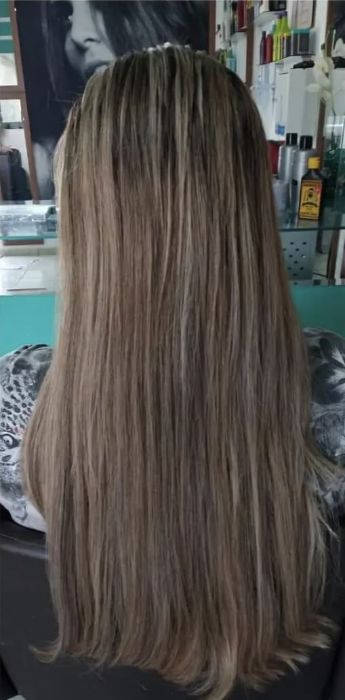
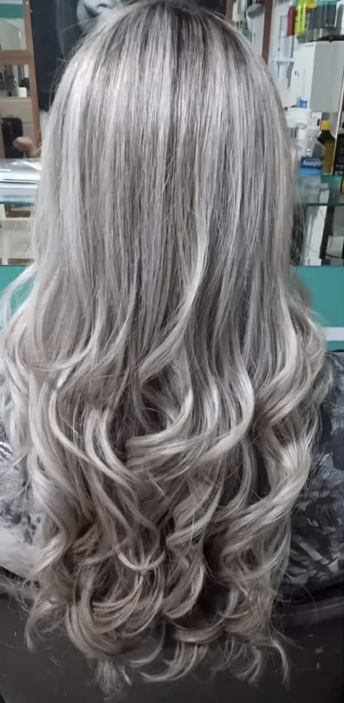
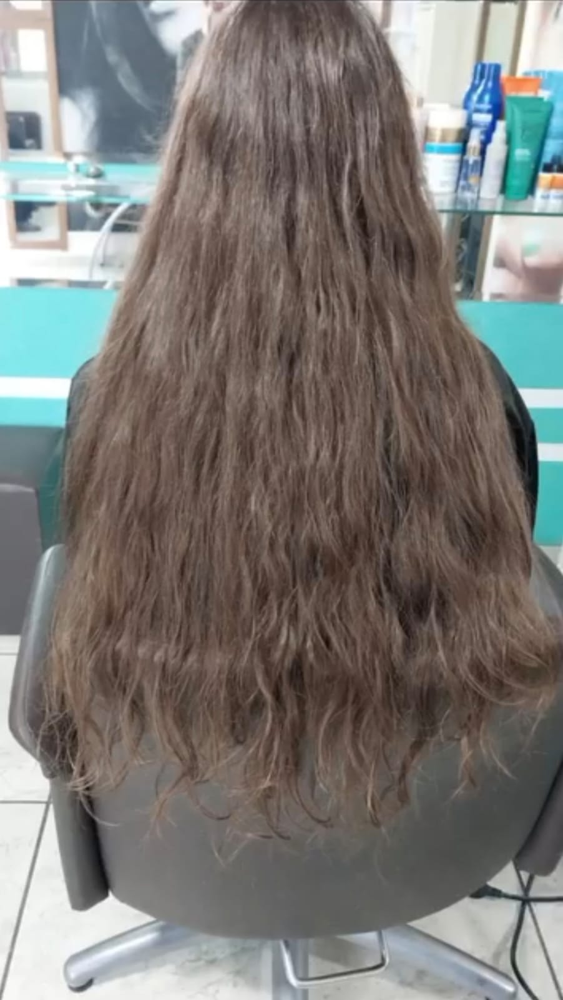
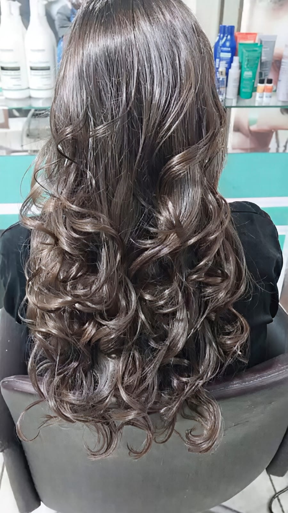
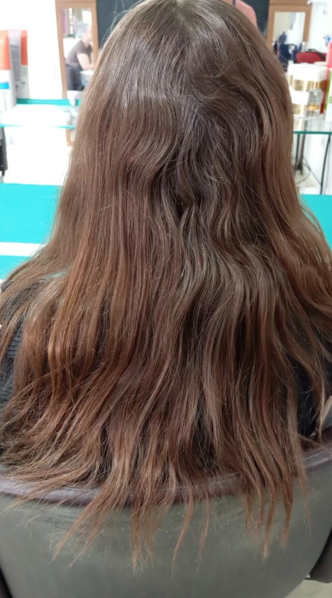
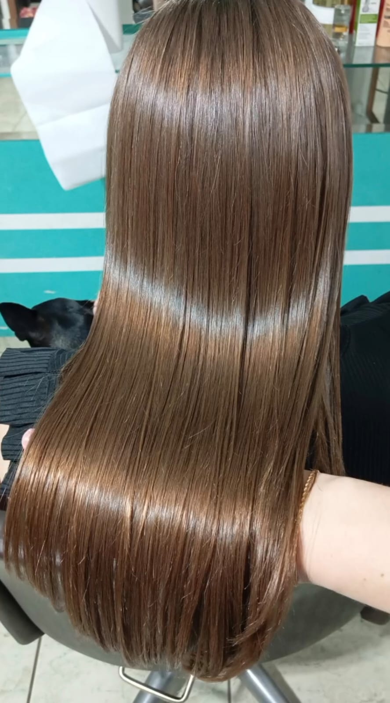
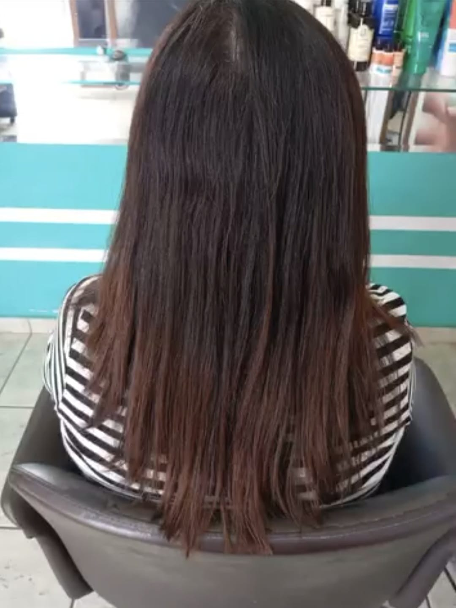
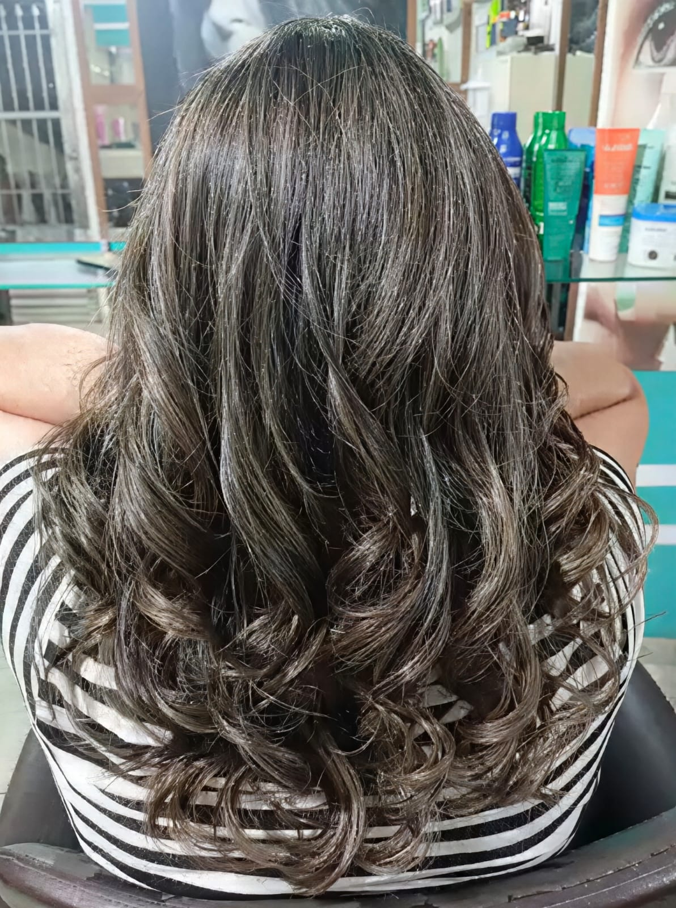
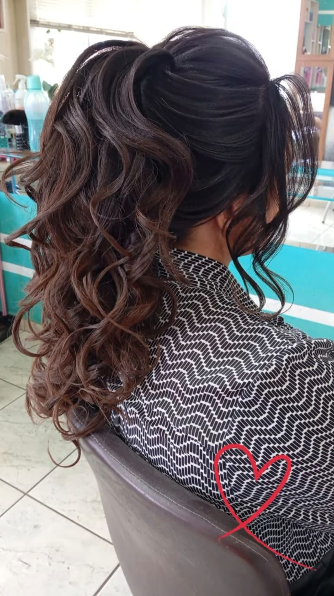
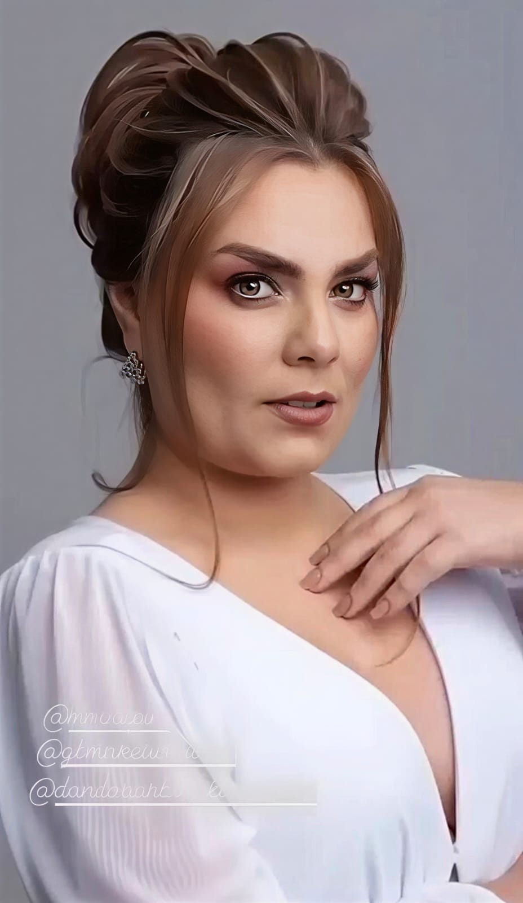

Clareamento capilar que utiliza mechas muito finas ou grossas e espalhadas por toda a cabeça para dar brilho


O corte ideal de acordo com o formato do rosto.


Alisamento progressivo com fórmula que mantém os fios saudáveis e brilhantes.


Aplicação de mechas douradas para iluminar o rosto e dar vida aos cabelos castanhos.


Penteados personalizados conforme o gosto e a necessidade.

Sou Hérica Vanessa, especialista em transformação capilar com mais de 9 anos de experiência. Minha paixão pela beleza capilar começou cedo e hoje transformo cabelos em verdadeiras obras de arte.
Minha filosofia é simples: saúde capilar em primeiro lugar. Cada procedimento é pensado para realçar sua beleza natural, respeitando a integridade dos fios.
No meu espaço, você encontra não apenas técnica, mas também cuidado, atenção e um ambiente acolhedor onde sua autoestima é a prioridade.
Jundiaí/SP
Horário de atendimento:
Terça a Sábado, das 9h às 19h